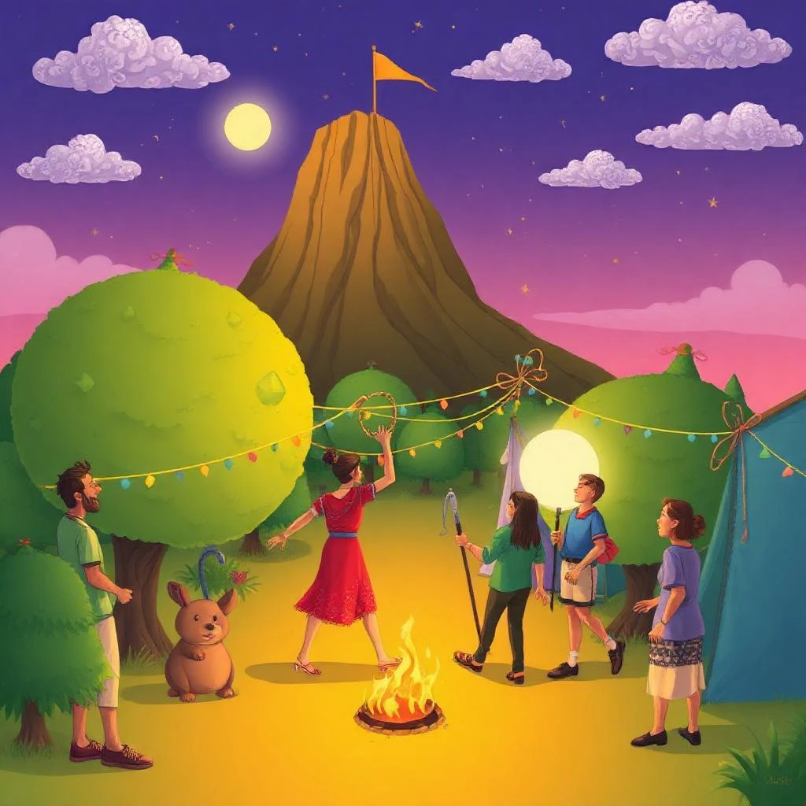
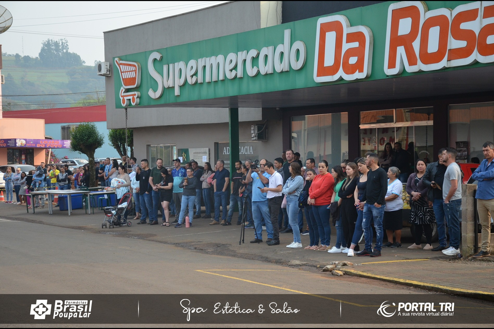

Sobre o Projeto
Este projeto explora a transição do campo para a cidade, apresentando a vida rural e urbana, suas diferenças e semelhanças. Através de histórias e ilustrações, buscamos conectar essas duas realidades.
Ilustração
Histórias do Campo
Conheça as histórias inspiradoras de quem vive no campo e suas tradições.
A Vida na Fazenda
Descubra como é o dia a dia de um agricultor e as técnicas que ele utiliza.

Tradições Culturais
Varias festas do municipio .

Produtos Locais
Saiba mais sobre os produtos cultivados e consumidos na região.
